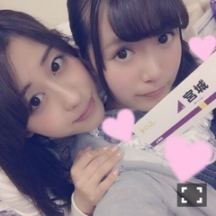
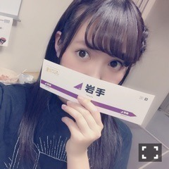

| 2016/04 21 Thu | ひめたん-0o0-その630 |
アンダーライブ全国ツアー
東北シリーズ前半終わりました！
会場に足を運んで下さった皆さん
本当にありがとうございます( ˆωˆ )
福島・宮城・岩手
3県でのライブが終了しました
ここまで楽しんで頂けてますか？

今回、会場毎に
こんなステッカーをお配りしています
是非旅の、ライブの記念に( ˆωˆ )
初めての場所でのステージというのは
新しい出会いと、発見と、課題と、
いろんなことを感じる毎日です。
もっとこんなライブにしたい、
もっとこんな景色を届けたい、
ついつい貪欲になってしまいますね。
土地柄なのか、会場の雰囲気が
とてもあたたかくて
逆にパワーを頂いて帰る毎日です、が
それに甘んじることなく
発信する側の人間として
こだわってステージに立ちたい( ˇωˇ )
東北シリーズも折り返し地点。
青森・秋田・山形会場にお越しの皆さん
どうか楽しみに待ってて下さい！

衣装はまだ秘密なのです、が
隠れてませんね。笑
どうか見なかったことに......
あ、そうだ。
モバイルサイトでの企画
「乃木the幹線」は楽しんで頂けてますか？
そちらも合わせてよろしくお願いします♡
日曜の夜は、らじらー！サンデー
次の乃木坂回は5/1、
ゲストは星野みなみちゃんです！
初登場！
アンダーライブ参加したよ～って方は
ご報告待ってますよ( ˆωˆ )
おたよりの宛先はこちら！
あ、それからNOGIBINGO!6
観ていただけましたか( ˇωˇ )？
アシスタントMCって
どんなことするのー？って
先日握手会でたくさん聞かれたのですが
あんな感じでずっと
イジリーさんのお隣にいます。
私はまだオンエア観れてないので
何も言えないんですが
良かったら感想聞かせて下さい～＊

～お知らせ～
4/22 BRODY
4/23 UTB
4/23 B.L.T.
4/26 ヤングチャンピオン
4/27 ラジオ番組表2016春号
4/30 月刊エンタメ
5/5 発掘！お宝ガレリア
5/8 BOMB

すみません似たような写真ばっかで。
ステッカー集め楽しいです(^o^)
ゆっちゃんのブログに
遊びに行くと
みんなでの集合写真あるのでそちらも是非。
次回の日記には
雑誌のオフショットとか
貼れそうな予感♡
(＊´・ω・＊)
コメント(795)
2016/04/21 23:42